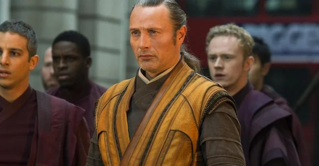
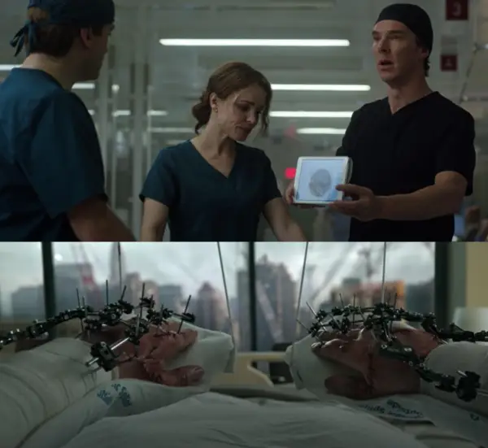
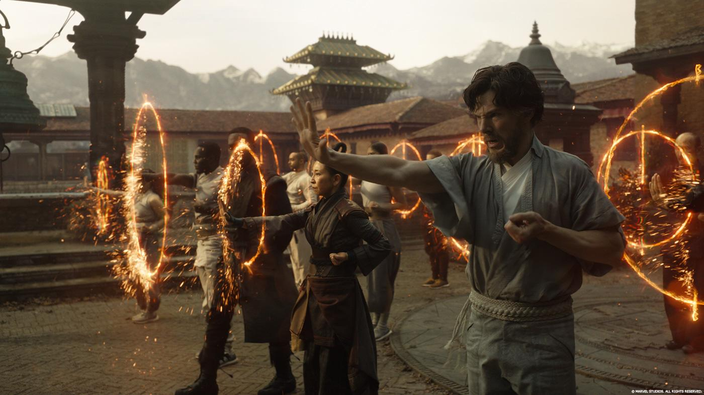
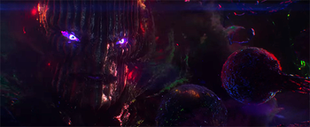
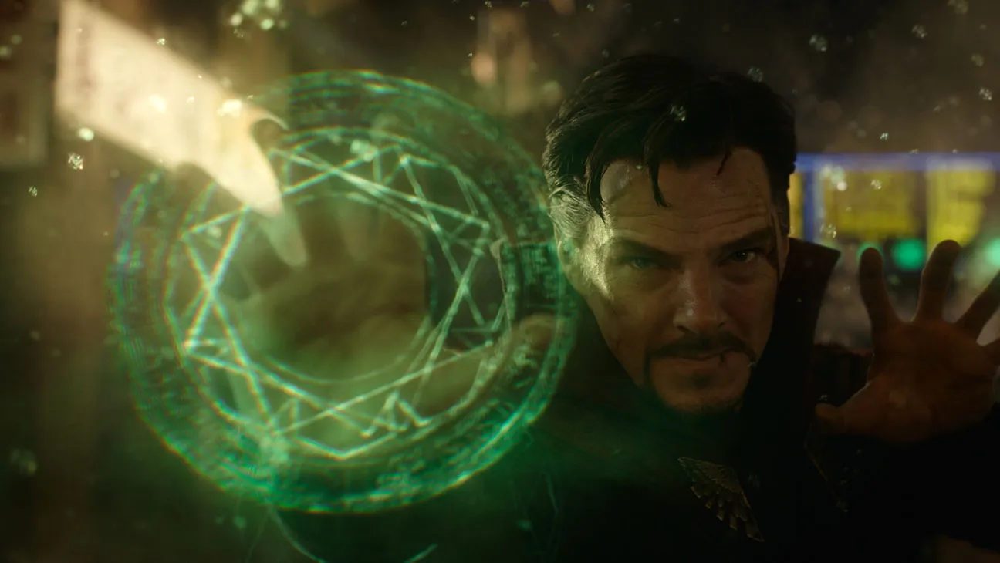
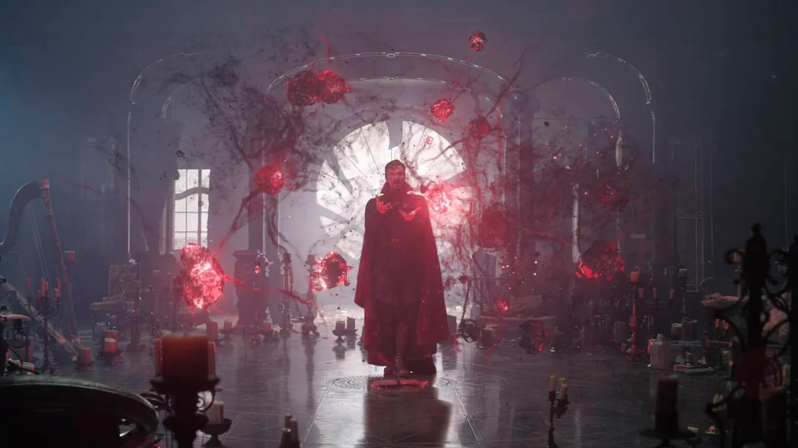

Introducere
În Kathmandu, vrăjitorul Kaecilius și zeloții săi intră în complexul secret Kamar-Taj unde decapitează bibliotecarul. Ei fură câteva pagini dintr-o carte aparținând Celei Antice, o vrăjitoare cu viață lungă, care a predat artele mistice tuturor elevilor de la Kamar-Taj, inclusiv lui Kaecilius. Cea Antică îi urmărește pe trădători, dar Kaecilius și adepții săi scapă.

Accidentul Doctorului Strange
În orașul New York, dr. Stephen Strange, un neurochirurg bogat și apreciat, dar arogant, își rănește grav mâinile într-un accident de mașină în timp ce se îndrepta către o conferință, lăsându-l incapabil să mai opereze vreodată...

Antrenamentul la Kamar-Taj
Strange află despre Jonathan Pangborn, un paraplegic care a reînceput în mod misterios să meargă din nou. Pangborn îl îndreaptă pe Strange către Kamar-Taj, unde este primit de Mordo, un vrăjitor sub comanda Celei Antice...

Planul lui Kaecilius
Kaecilius folosește paginile furate pentru a contacta entitatea Dormammu din Dimensiunea Întunecată, unde timpul nu există. Kaecilius distruge Sanctuarul din Londra pentru a slăbi protecția Pământului...

Lupta Decisivă
Strange folosește Ochiul lui Agamotto pentru a inversa timpul și a-l salva pe Wong, apoi intră în Dimensiunea Întunecată și creează o buclă de timp nesfârșită în jurul lui și al lui Dormammu...

Final
Dezgustat de Strange și Cea Antică pentru că au sfidat legile naturii, Mordo renunță la viața sa de vrăjitor și pleacă. Strange înapoiază Ochiul la Kamar-Taj și își stabilește reședința în Sanctuarul din New York...
